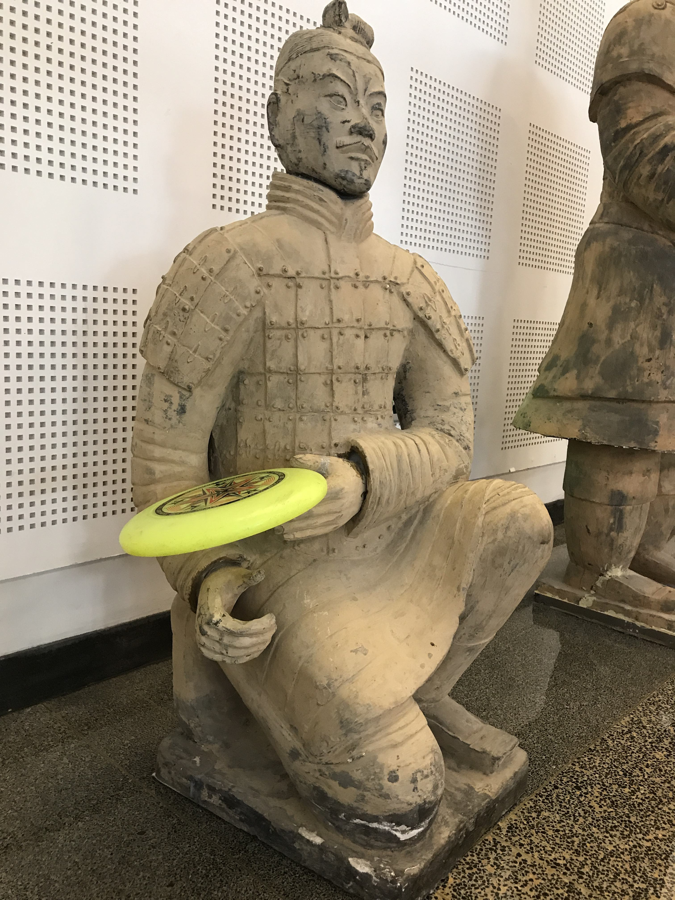

|
James Huang I was born in Seattle, WA. After spending the early years of my life in Seattle, including 3 years in Early World Children's School in Bellevue, I moved with parents to Beijing at age of 6. |
Activities
On the right is my army of 150 cicada exoskeletons, which all look alike, but upon careful examination, each has quite different poses and looks. Don't they evoke the same sense of gravitas as that of the terra-cotta warriors? Can you tell a cicada's gender from its exoskeleton (shell)? Well, I can :) I have had this natural curiosity since very young, probably under the influence of my father.
Later on this natural curiosity has evolved into intellectual curiosity. For example, I once dove deep into the inner workings of digital handwritten recognition and deciphered all the math magic behind: full of algebras, functions, vectors, matrices, derivatives, calculus etc. So naturally this became the topic of my IB Math AA HL IA essay.
Not convinced by the common perception that a descending basketball's air drag and air buoyance are negligible, I went deep on the research question "How does a basketball's gauged internal air pressure affect its Coefficient of Restitution (e)?", a combined approach involving theoretical modeling and a systematic experiment was used to investigate the problem. My research has demonstrated that these forces are not neglibible at all as the ball incurs two thirds of its energy loss to such forces when descending. Thus a new and more comprehensive model was proposed and experimentally verified in my IB Physics HL IA essay.
In addition, I like to create things. I once built among other things a turtle-walking harness that had allowed my pet turtle to play around freely in the pond while my brother and I easily tracked its whereabouts.
Over time, my curiosity and creativity have made me to become obsessed with AI and vision: humnan vision and computer vision. When volunteering to read for the blind kids at HongDanDan Charity Center for the Visually Impaired, I came to realize that the typical cane used by the blind is just dumb and at best a stiff extension to one's arms. Thus, it was natural for me to come up with the idea of a smart cane POC system in the Robotics class.
The ideal system should be able to "see" the approaching objects and "warn" the user, so a webcam and speakers were added. To complete the reflex arc, a "brain" was needed, therefore a Raspberry PI4B chip was
installed, with Twister OS (a linux version for embedded systems). But how to detect an approaching object's distance? Searching for something like a bat's echo-locator, I was pleased to find that ultrasonic sensors could work.
But an ultrasonic sensor receives ECHOs at 3.5 volts, different than the chip's working voltage of 5.
But how to detect an approaching object's distance? Searching for something like a bat's echo-locator, I was pleased to find that ultrasonic sensors could work.
But an ultrasonic sensor receives ECHOs at 3.5 volts, different than the chip's working voltage of 5.
After some brainstorming, I designed a circuit to adjust the voltage using a breadboard and jumpers' approach. Then a new problem came up: how to recognize a car's image as a car? After extensive research, I employed Google coco object model and tensorflow-lite to achieve that aim. Next, how to extract the webcam video frame at real-time? How to convert warning words to voices? Such problems surfaced one after another, all seeming invincible initially. With a trial-and-error approach, much learning, and many mini-innovations along, I was able to pull it off. The final system worked beautifully. Through this I have learned that creativity alone does not necessarily make me a successful innovator, and that it requires a chaperone named "hard work" to recruit good luck and serendipity.
One of the key technologies used was AI driven object recognition from a real-time video frame. I furthered my interest in this by researching how to make machines understand the content of a video, and published my research result A Novel Approach for Analysis and Understanding of Video Content at the 4th International Conference on Artificial Intelligence and Computer Science (AICS2022).
My passion with AI and vision led me to AI medicine. I am doing an internship at the AI core team of Airdoc Corp., a pioneer in AI medicine, working on models to improve disease prediction precision based on retinal imaging. Our models help predict dozens of diseases including diabetes, glaucoma, AMD, dementia, and infarctions. My IB Extended Essay is about comparing two deep learning models on their data adaptability in AI medicine. When I recently met the patients that our technology helped at Beijing Tsinghua Changgung Hospital, I felt a great sense of pride and responsibility. In this InitialView Interview, I talked about my intern work and AI medicine as well.
At university, I hope to get good training in science and engineering, to make myself more equipped to help make our world better.
Music
Whenever I am tired or exhausted, music provides the magic healing power for me. I like to play piano, flute and drum. Below are my flute practices and a band performance (I was the drummer).|
The FLY band performance
|
Reading list
Sports
Wherever I go, I always carry a frisbee. When hanging out, it often assures a fun ultimate game; when hiking, it is the designated water tray for my dog; when in the woods, it becomes my power shield; when napping, it is my sleepy pillow; when debugging code, it is the preferred mouse pad as it helps me focus better:) A member of my high school's swimming team, I also love American Football, Ping-pong, Basketball and Badminton.